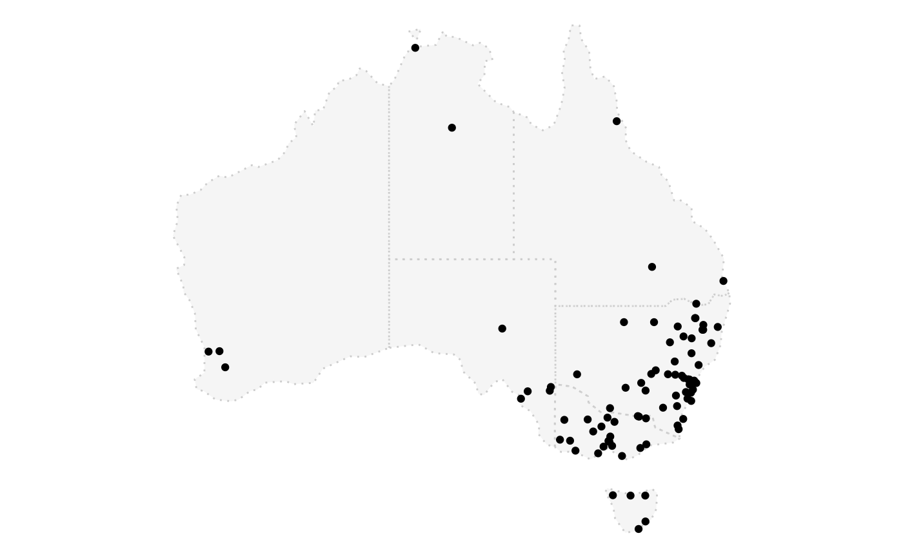

aus_climate.RdOne year worth (2020) of climate data recorded in 72 stations across Australia.
The data is computed from National Oceanic and Atmospheric Administration (NOAA) using the rnoaa package.
aus_climate
A cubble object with 5 station-related variables and 3 time-related variables (PRCP, TMAX, and TMIN), nested in the ts column
station id
latitude of the station
longitude of the station
elevation of the station
station name
the world meterological organisation (WMO) station number
a list-column that nests all the time-wise measures: date, prcp, tmax, and tmin
#> #> #>#>library(ggplot2) state_map <- ms_simplify(ozmaps::abs_ste, keep = 2e-3) plot_map(state_map) + geom_point(data = aus_climate, aes(x = long, y = lat))